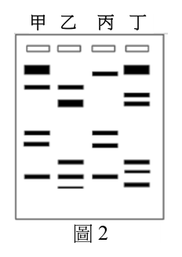
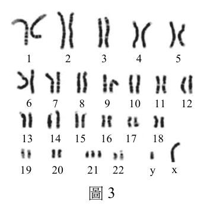
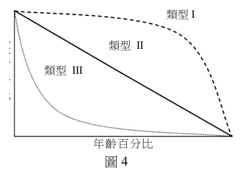
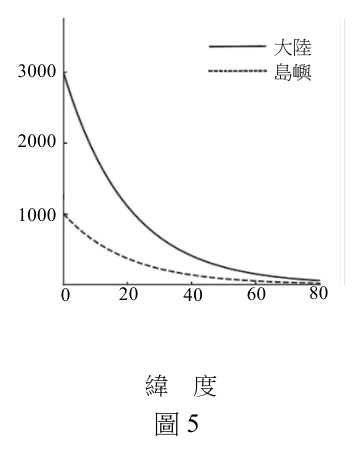
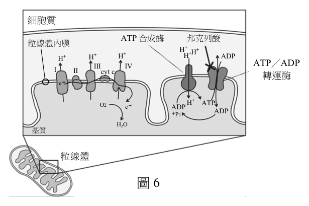
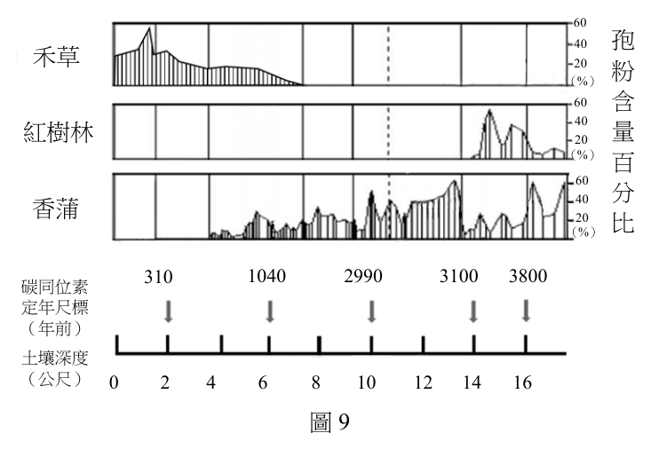
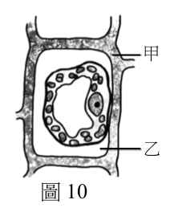
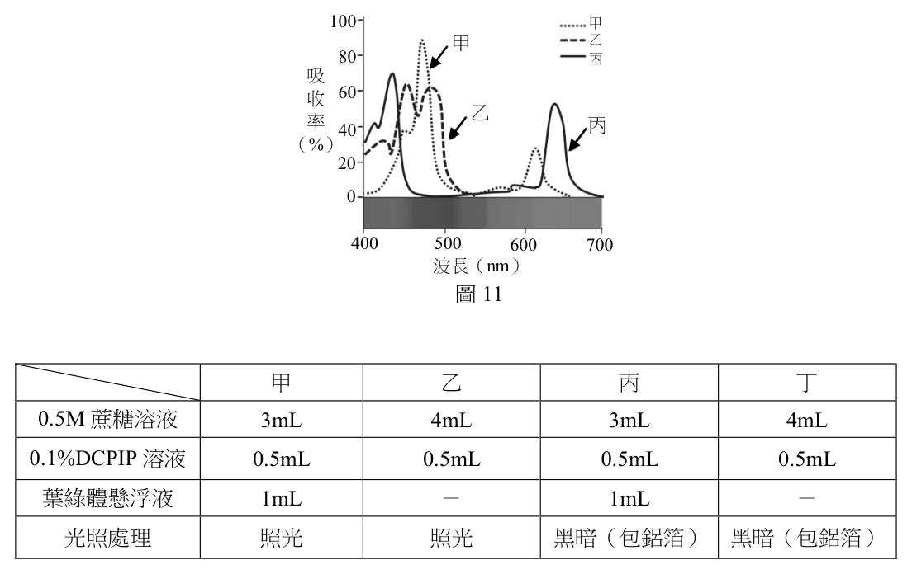
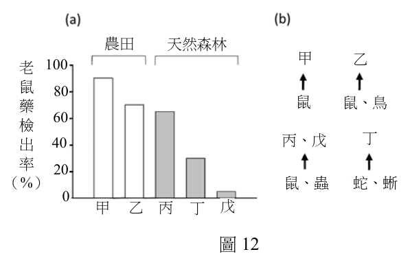

開卷有益 ／
分科測驗 ／ 生物 ／ 113 年113 年分科測驗生物試題與答案
這一頁是民國 113 年分科測驗生物的整份歷屆試題，共 47 題，題目與標準答案出自大考中心 分科測驗歷年試題（依著作權法 §9，考試試題不受著作權保護），其中 47 題附有詳解。以下逐題列出題幹、選項與答案；要計時作答或記錄成績，請用線上練習。
大學入學考試中心原始場次代碼：分科生物
線上作答這一科 →
全部 47 題
第 1 題
下列何者含多種水解酵素,幾乎可分解各類型的生物巨分子,是細胞分解物質的重要胞器?
（A） 內質網（B） 溶小體(溶體)（C） 高基氏體（D） 細胞核答案：（B）
詳解與考點 正解：本題問的是能以多種水解酵素進行細胞內消化的胞器。溶小體內含可分解蛋白質、醣類、脂質與核酸等物質的酵素，是細胞分解與回收物質的重要場所，故選 B。
A：內質網主要參與蛋白質或脂質的合成、加工與運輸；它不是以大量水解酵素分解各類巨分子的胞器。
C：高基氏體會修飾、分類與包裝蛋白質，也和溶小體酵素的運送有關；實際執行廣泛消化的場所仍是溶小體。
D：細胞核保存遺傳物質並調控基因表現，不負責細胞質中大分子的水解分解。
本題考點：溶小體（lysosome）——看到「水解酵素」與「分解各類巨分子」要判為溶小體；內膜系統分工（endomembrane system）——高基氏體偏向加工與分送，溶小體偏向消化；胞器功能辨識（organelle function）——用主要功能而非彼此的物質運送關聯來判選項。
第 2 題
急救時,醫生常以強心劑增加病人心臟收縮力及提升血壓。下列何者可用來做強心劑?
（A） 腎上腺素（B） 胰島素（C） 睪固酮（D） 心房排鈉肽答案：（A）
詳解與考點 正解：關鍵在急救時需要迅速增強心肌收縮並提升血壓。腎上腺素可作用於心臟與血管的腎上腺素性受器，增加心跳與心肌收縮力，並在特定血管造成收縮，因此可作為強心與升壓用途，故選 A。
B：胰島素的主要作用是促進細胞攝取與儲存葡萄糖，用於血糖調節，不會用來急性增強心臟收縮。
C：睪固酮是性激素，主要影響生殖與第二性徵；其作用時間尺度與急救所需的即時強心不同。
D：心房排鈉肽促進排鈉、利尿與血管舒張，有降低血容量與血壓的傾向，方向和本題需求相反。
本題考點：腎上腺素（epinephrine）——交感相關作用可增加心肌收縮與心跳，遇急性循環支持可作判斷；心輸出量（cardiac output）——心跳與每搏輸出量上升會提升循環輸出；心房排鈉肽（atrial natriuretic peptide）——促進排鈉、利尿與降血壓，是和升壓選項相反的訊號。
第 3 題
下列有關植物葉子的敘述,何者正確?
（A） 水稻葉子具網狀葉脈（B） 洋蔥的複葉上有腋芽（C） 橘子有掌狀複葉（D） 豌豆的捲鬚是特化的葉子答案：（D）
詳解與考點 正解：判準是葉的脈序、單複葉構造與變態器官的來源。豌豆的捲鬚由葉或小葉特化而成，可攀附支撐物，因此（D）正確，故選 D。
A：水稻是單子葉植物，葉脈主要呈平行脈，不是網狀葉脈。
B：洋蔥的葉為單葉；腋芽位於莖與整片葉的葉腋，不會把複葉的小葉基部都視為有腋芽的位置。
C：橘子的葉是單葉，常見具翅狀葉柄；翅狀葉柄不能判成掌狀複葉。
本題考點：葉脈（leaf venation）——單子葉植物常見平行脈，雙子葉植物常見網狀脈；複葉與腋芽（compound leaf and axillary bud）——腋芽只在整片葉與莖的交界，可用來區分小葉；變態葉（modified leaf）——捲鬚、刺或鱗葉要追溯其由葉的哪一部分特化而來。
第 4 題
下列有關人體肌肉與其調控方式的敘述,何者正確?
（A） 幫助腸道蠕動的肌肉是隨意肌（B） 組成靜脈血管的肌肉是橫紋肌（C） 心肌的收縮可經由內分泌系統調控（D） 骨骼肌的收縮只受大腦意識調控答案：（C）
詳解與考點 正解：判斷肌肉調控方式時，先看肌肉種類與是否能受激素影響。心肌雖有自主節律，腎上腺素等內分泌訊號可改變其收縮速率與收縮力，因此心肌收縮可受內分泌系統調控，故選C。
A：腸道蠕動主要靠平滑肌收縮，屬不隨意肌，受自律神經與局部調控。
B：靜脈血管壁中的肌層主要是平滑肌，不是具有明顯橫紋的骨骼肌。
D：骨骼肌可受大腦意識控制，但膝跳等反射也能經脊髓反射弧引發收縮；「只受」意識調控過度限縮。
本題考點：肌肉組織（muscle tissue）——以骨骼肌、心肌、平滑肌的構造與隨意性判讀功能；內分泌調控（endocrine regulation）——激素可藉血液改變心肌與平滑肌的活動，不等於所有肌肉都由意識直接控制；反射弧（reflex arc）——骨骼肌的動作可由中樞意識或脊髓反射啟動。
第 6 題
下列敘述中,何者為生物演化較合理的證據?
（A） 狗的體型與毛色有極大差異（B） 加拉巴哥群島不同喙型的雀鳥,各自有不同的取食方式（C） 蟒蛇因為使用不到四肢而造成四肢退化（D） 增加溫度造成培養中的細菌大量死亡答案：（B）
詳解與考點 正解：加拉巴哥群島雀鳥具有不同喙型，且各自對應不同取食方式，材料同時呈現族群間可遺傳差異與環境適應的關聯，是自然選擇與分化的較合理證據，故選B。
A：狗的體型與毛色差異顯示品種內有變異，但題幹未交代這些差異如何經世代累積或與自然環境適應相關，證據力較弱。
C：因不用四肢而使四肢退化是用進廢退的說法，沒有說明可遺傳變異如何在族群中被保留。
D：升溫使細菌大量死亡只描述短期環境壓力；若未比較存活者是否具有可遺傳差異及其後代比例，不能直接作為演化證據。
本題考點：演化證據（evidence for evolution）——要能連結世代間的可遺傳差異與族群比例變化，不能只見到個體受環境影響；適應輻射（adaptive radiation）——相近祖先族群在不同生態位分化時，性狀與資源利用的對應關係可作為判讀線索。
第 7 題
下列有關植物與動物細胞構造之比較,何者正確?
（A） 植物的細胞膜組成含有醣類,動物則否（B） 液泡只存在於植物細胞中,中心粒只存在於動物細胞中（C） 植物細胞分裂時會在細胞中央產生細胞板,動物細胞則否（D） 兩者的細胞核膜皆為單層膜構造,粒線體則具雙層膜構造答案：（C）
詳解與考點 正解：植物細胞進行細胞質分裂時，囊泡在細胞中央聚合形成細胞板，再向外發展成新的細胞壁；動物細胞沒有細胞板，而以分裂溝將細胞質縊裂，故選C。
A：植物與動物的細胞膜都含脂質、蛋白質與醣類成分，例如醣蛋白與醣脂質，不能以醣類區分兩者。
B：動物細胞也可有小液泡；中心粒在多數高等植物細胞不常見，但「液泡只在植物、中心粒只在動物」都說得過於絕對。
D：細胞核膜與粒線體膜都屬雙層膜構造，核膜不是單層膜。
本題考點：細胞質分裂（cytokinesis）——植物看細胞板，動物看分裂溝，據此區分兩類細胞分裂方式；生物膜（biological membrane）——以膜層數辨認胞器時，核膜與粒線體膜皆為雙層膜。
第 8 題
下列有關人類胚胎發育之敘述,何者正確?
（A） 卵在受精後,需移動至子宮才可開始進行卵裂（B） 龍鳳雙胞胎一般是一個受精卵分裂成兩個胚胎而形成（C） 囊胚著床後,子宮內膜會形成外胚層進行後續發育（D） 人類絨毛膜促性腺素(HCG)可促進性腺分泌,維持子宮內膜厚度答案：（D）
詳解與考點 正解：關鍵在胚胎著床初期必須維持子宮內膜。胚胎分泌的人類絨毛膜促性腺素（human chorionic gonadotropin，hCG）可維持黃體的內分泌功能，使相關激素持續支持子宮內膜，故選D。
A：受精卵在輸卵管內即開始卵裂，並在持續分裂的過程中移向子宮，不必先到達子宮才開始。
B：龍鳳雙胞胎通常是兩個卵各自受精形成的異卵雙胞胎；一個受精卵分裂形成的同卵雙胞胎通常性別相同。
C：囊胚著床後，子宮內膜形成支持胚胎的母體組織；外胚層來自胚胎本身的細胞，不是由子宮內膜形成。
本題考點：早期胚胎發育（early embryonic development）——依序分辨受精、卵裂、囊胚與著床發生的位置；異卵雙胞胎（dizygotic twins）——兩個卵與兩個精子形成，性別可不同；hCG——看到著床後維持內膜時，連結到維持黃體與激素分泌。
第 9 題
某警察利用PCR技術分析刑案現場DNA樣本甲,以及嫌疑人乙、丙、丁的血液DNA樣本。
四樣本的PCR產物分別以同一膠體進行電泳結果如圖2,黑色條帶為 甲 乙 丙 丁
產物在膠片上的訊號,產物分子量越大泳動越慢,條帶會位於膠片
較高位置。下列推論何者正確?

（A） 圖2可顯示轉錄後修飾現象的異同,可用來判斷誰最可能是犯人（B） 圖2可觀測到基因點突變位置,以判斷犯人（C） 三人之中,丁最有可能是此案的犯人（D） 四個樣本的PCR反應需使用相同的引子對組合,才能進行比較 圖2
分析答案：（D）
詳解與考點 正解：PCR 電泳能比較由同一 DNA 區段擴增出的片段長度或條帶型態。四組樣本必須使用相同的引子對組合，才代表放大的是相同座位，條帶位置才有可比較的意義。故選 D。
A：轉錄後修飾發生在 RNA 形成後，PCR 的材料是 DNA，電泳條帶不能呈現 RNA 的剪接或其他轉錄後修飾。
B：電泳只能反映 PCR 產物的大小或有無，未必能直接定位點突變；不改變片段長度的突變也可能無法由這種結果辨出。
C：犯人判定須使現場樣本與嫌疑人的可比較 DNA 條帶型態相符，不能只憑單一條帶或未對準相同座位就下結論；本題的方法前提才是可作比較的核心。
本題考點：聚合酶連鎖反應（polymerase chain reaction，PCR）——比較樣本前，確認各樣本以相同引子擴增同一 DNA 區段；凝膠電泳（gel electrophoresis）——條帶位置主要反映片段大小，不能直接讀成轉錄調控或每一個點突變的位置。
第 10 題
下列有關感覺受器與神經系統的相關敘述,何者正確?
（A） 皮膚內的痛覺受器細胞屬於機械受器,其訊息需再經由感覺神經元轉傳至中樞;
溫度受器則為感覺神經元末梢（B） 本體感覺有一大部分依靠骨骼肌內的機械受器整合（C） 耳石推擠毛細胞纖毛,直接影響聽覺神經細胞產生動作電位（D） 視錐細胞對光有高敏感度,主要偵測環境的明暗變化答案：（B）
詳解與考點 正解：關鍵在本體感覺要回報肌肉長度、張力與肢體位置；骨骼肌內的肌梭等機械受器提供這類訊息，再由神經系統整合，所以（B）正確，故選 B。
A：痛覺受器主要是感覺神經元的自由末梢，屬傷害受器而不是機械受器；溫度受器也多由感覺神經元末梢接受刺激，前半段的分類已不成立。
C：耳石移動會彎曲前庭器官毛細胞的纖毛，先改變毛細胞的受器電位與傳遞物質釋放；它不是直接使聽覺神經細胞產生動作電位。
D：視錐細胞在明亮環境下分辨色彩與細節；對微弱光線高度敏感、主要辨別明暗的是視桿細胞。
本題考點：本體感覺（proprioception）——肌梭、腱器官與關節受器的訊息用來判斷肢體位置與運動；傷害受器（nociceptor）——痛覺要和壓覺、觸覺等機械受器分開；毛細胞轉導（hair-cell transduction）——纖毛偏轉先產生受器電位，再影響傳入神經放電。
第 11 題
保育工作需要生態學的各種知識,以櫻花鉤吻鮭的復育為例,下列敘述何者正確?
（A） 極端降雨或乾旱造成環境改變,也可能影響生物組成,衝擊櫻花鉤吻鮭（B） 探討櫻花鉤吻鮭的族群密度、存活曲線與年齡結構,屬於群集生態學的範疇（C） 根據成魚棲地水溫、光照與食性的偏好,可以決定仔稚魚合適的放流地點（D） 七家灣溪沿岸農地肥料使用對水質優養化的影響,有助於櫻花鉤吻鮭復育答案：（A）
詳解與考點 正解：判準是復育物種的棲地會受非生物環境改變牽動。極端降雨或乾旱可改變溪流流量、水溫、底質與食物來源，因而影響櫻花鉤吻鮭及其群集組成，故選 A。
B：族群密度、存活曲線與年齡結構都描述單一物種族群的數量與組成，屬族群生態學，不是研究多物種關係的群集生態學。
C：成魚與仔稚魚對水溫、流速、遮蔽和食物的需求可能不同；成魚偏好不能直接決定仔稚魚的放流地點。
D：沿岸農地肥料增加氮、磷負荷會提高水體優養化風險，可能惡化冷水溪流棲地；復育的方向是控制這類壓力，而非把肥料使用視為助益。
本題考點：棲地擾動（habitat disturbance）——評估保育風險時，要連結氣候事件與水文、溫度、食物等棲地條件；族群生態學（population ecology）——密度、年齡結構與存活曲線以單一物種為單位；生命史階段（life-history stage）——放流或棲地管理不能把成體需求直接套到幼體。
第 12 題（多選）
圖3為某種疾病患者的染色體核型圖,根據此圖下列敘述與推論,哪些正確?

（A） 此疾病是因染色體點突變而造成（B） 只能使用生殖細胞來觀測此種染色體核型（C） 此疾病可能導因於細胞在行減數分裂時染色體發生 1 2 3 4 5
無分離（D） 同一數字標示、排列在一起的染色體,應屬於同源染色體 6 7 8 9 10 11 12（E） 無法由此圖分辨出姊妹染色分體 13 14 15 16 17 18答案：（C）（D）（E）
詳解與考點 正解：判準在核型圖能判讀的是染色體的數目與成對排列，不是單一鹼基的序列。染色體無分離可造成可見的數目異常；同一編號成對排列的是同源染色體，而標準核型圖不足以辨別姊妹染色分體的個別身分。故選 C、D、E。
C：減數分裂時同源染色體或姊妹染色分體未正常分開，會使配子多一條或少一條染色體；受精後可形成核型異常。
D：核型圖把形態與大小相近、帶有相同基因座的一對染色體排在同一編號下，這一對來自雙親的染色體屬同源染色體。
E：核型圖將複製後的整條染色體依大小排列，沒有來源或序列標記可用來區分同一條染色體上的兩條姊妹染色分體。
A：染色體點突變改變的是少量 DNA 鹼基，通常不會造成核型圖可辨識的數目或大型結構差異。
B：核型分析可使用能分裂的體細胞，例如培養後停留在分裂中期的細胞，並非只能取生殖細胞。
本題考點：核型分析（karyotyping）——用來判讀染色體數目與大型結構，不用來偵測點突變；染色體無分離（nondisjunction）——減數分裂分配失常時，先從異倍體推回可能機轉；同源染色體（homologous chromosomes）——同一編號的一對染色體基因座對應，但不必具有完全相同的等位基因。
第 13 題（多選）
下列有關植物激素及其功能的敘述,哪些正確? 19 20 21 22 y x
（A） 授粉時期植物產生大量乙烯可避免提早落果 圖3（B） 受精後需要吉貝素與離層酸來促進細胞分裂,導致果
實膨大（C） 久未萌發的種子可額外添加吉貝素打破休眠（D） 葡萄授粉後以細胞分裂素處理,可以增加花穗數量（E） 種子的成熟期離層酸增加,抑制種子過早萌發答案：（C）（E）
詳解與考點 正解：判準是種子休眠與萌發受到拮抗的激素調控；吉貝素可促進萌發、打破休眠，離層酸在成熟期上升並維持休眠，因此（C）和（E）符合。植物激素的效應會隨組織與發育期而異，本題僅以可辨文字判斷，故對細節把握度有限，故選 C、E。
C：久未萌發的種子可施加吉貝素；吉貝素能促進與萌發相關的代謝作用，因此可用來解除部分休眠狀態。
E：種子成熟期離層酸增加有助於維持休眠，抑制尚未適合時機的過早萌發。
A：乙烯常促進器官脫落與果實成熟；在授粉期大量乙烯不符合「避免提早落果」的作用方向。
B：離層酸的主要作用偏向抑制生長與維持休眠，不會和吉貝素一起作為促進細胞分裂、造成果實膨大的組合。
D：授粉後才處理果實，不能回頭增加已在花芽分化期決定的花穗數量；細胞分裂素與果實細胞分裂的關聯，不等同於增加花穗。
本題考點：吉貝素（gibberellin）——看到「打破休眠、促進萌發」可優先判為吉貝素；離層酸（abscisic acid）——看到「種子成熟、維持休眠、抑制萌發」可判為離層酸；乙烯（ethylene）——果實成熟與脫落傾向是判斷其作用方向的線索。
第 14 題（多選）
一物種面對不同的環境壓力,如食物資源豐富度、捕食者與生存空間競爭,有不同的
生存策略。圖4為三種類型的存活曲線,下列相關敘述與推論,哪些正確?

（A） 大象壽命長、性成熟時間晚、產生較少後代,
親代照顧時間長,其存活曲線為類型I 類型I（B） 若氣候變遷,牡蠣幼苗著床率降低,其存活曲 生 類型 II
線可能更向類型III偏移 存 百 類型 III（C） 在資源豐富的環境中,麻雀因為容易獲取 分
食物和避開捕食者,存活曲線多為類型III 比（D） 熱帶雨林的穩定環境有利於植物維持較
恆定的存活率,故雨林植物均為類型II 年齡百分比（E） 若昆蟲數量大增,在資源有限與競爭壓力下, 圖4
其存活曲線會趨向類型III答案：（A）（B）（E）
詳解與考點 正解：判準是各類存活曲線的死亡時點分布。類型 I 在幼年到壯年存活率高、晚年才快速下降；類型 III 則在生命早期死亡率高。大象符合類型 I，牡蠣幼苗著床率降低會加重早期死亡，而資源有限下大量昆蟲的早期競爭死亡增加，均可使曲線趨向類型 III。故選 A、B、E。
A：大象後代少、成熟晚且親代照顧長，幼體存活率相對高，符合類型 I 的生存策略。
B：牡蠣幼苗著床率下降表示能進入後續生活史的個體更少，早期死亡比例提高，曲線會更接近類型 III。
E：昆蟲數量大增而資源有限時，個體在早期就面臨較強競爭與死亡壓力，符合類型 III 的特徵。
C：麻雀常以各年齡層死亡率較接近的類型 II 表示；食物較易取得並不足以把其存活曲線直接改判為類型 III。
D：環境穩定不表示所有雨林植物都具有相同死亡率型態，物種的繁殖量、幼苗存活與競爭策略仍可不同。
本題考點：存活曲線（survivorship curve）——先判死亡主要集中在生命早期、晚期或各年齡層；密度制約（density dependence）——資源有限時，族群密度提高可增加競爭與死亡率，但不會讓所有物種必然落入同一曲線型態。
第 15 題（多選）
第一屆(1901年)諾貝爾生理學醫學獎得主-德國貝林博士,於1890年與其同事北里
博士,將注射破傷風桿菌後存活的兔子血液抽出,待血液凝固後抽取上清液,並注入
小鼠體內。這些小鼠能在被破傷風桿菌感染後,仍得以存活。依題幹內容及現今免疫學
的發現,下列敘述哪些正確?
（A） 兔子血液中的紅血球是主要對破傷風桿菌產生抗性之血球細胞（B） 兔子血漿中的破傷風桿菌毒素是讓小鼠存活的重要因子（C） 將題幹所述之兔子血清注射入小鼠體內,並無法使該小鼠獲得對抗破傷風桿菌的終身免疫（D） 小鼠在接受兔子血清後,身體產生專一對抗破傷風桿菌的免疫分子（E） 被動物咬傷後,注射抗狂犬病血清以預防狂犬病,其防疫策略與題幹所述的案例類似答案：（C）（E）
詳解與考點 正解：本題描述的是把已免疫兔子的血清移入小鼠，保護作用來自血清中現成的特異性抗體，屬被動免疫。它能立即提供保護但不會讓受者建立持久的免疫記憶，因此（C）和（E）正確，故選 C、E。
C：小鼠得到的是兔子已形成的抗體，不是由自身淋巴球建立的記憶細胞；抗體會逐漸被代謝，不能形成終身免疫。
E：抗狂犬病血清也直接提供現成抗體，以在暴露後迅速中和病原或其成分，策略和移入兔子血清相同。
A：紅血球的主要功能是運輸氣體，不能作為產生特異性抗體的主要血球細胞；抗體由活化的 B 細胞分化成漿細胞後分泌。
B：使小鼠存活的不是破傷風毒素，而是血清中能結合、中和毒素的抗體。
D：接受血清的小鼠直接取得兔子的免疫分子，並不表示小鼠自身立刻產生同一種專一性免疫分子。
本題考點：被動免疫（passive immunity）——移入血清或免疫球蛋白是直接給抗體，保護快但短暫；體液免疫（humoral immunity）——漿細胞分泌抗體以辨識抗原或中和毒素；免疫記憶（immunological memory）——是否由受者自身啟動適應性免疫，是判斷能否長期保護的關鍵。
第 16 題（多選）
下列有關植物根吸收水分及礦物質的敘述,哪些正確?
（A） 根毛為表皮細胞衍生,具吸收水分的功能（B） 根毛有助於吸附空氣中帶電荷的礦物質離子（C） 在根的皮層,礦物質離子可透過原生質絲運送（D） 經由質外體路徑與共質體路徑運輸的水分不會遇到卡氏帶（E） 水分會隨離子濃度梯度往中柱流動,進入木質部並被往上運送答案：（A）（C）（E）
詳解與考點 正解：根吸收的判準要同時看表皮的接觸面、皮層細胞間的共質體連結與中柱建立的水勢差。根毛擴大吸水面積，原生質絲可連接細胞質，離子累積則使水分往中柱與木質部移動，所以（A）、（C）、（E）正確，故選 A、C、E。
A：根毛是根表皮細胞的延伸，能大幅增加與土壤水分接觸的面積，具有吸水功能。
C：原生質絲連接相鄰細胞的細胞質，礦物質離子可循這條共質體路徑在皮層細胞間移動。
E：離子被運入中柱後會降低該處水勢，水分依水勢梯度進入中柱與木質部，再可受蒸散拉力向上運送。
B：根毛接觸的是土壤溶液；礦物質離子須溶於水後被吸收，不是吸附空氣中帶電荷的離子。
D：質外體路徑的水分到內皮層會受卡氏帶阻斷，必須跨膜轉入共質體；不能說兩條路徑都不會遇到卡氏帶。
本題考點：根毛（root hair）——表皮細胞延伸用來增加與土壤溶液的交換面積；共質體與質外體（symplast and apoplast）——原生質絲連的是共質體，細胞壁與細胞間隙屬質外體；卡氏帶（Casparian strip）——它阻斷內皮層的質外體流動，迫使物質接受選擇性跨膜。
第 17 題（多選）
生態區位可以被定義為物種在生態系統中的角色與功能,可用來幫助探究生物適合
生存的氣候與環境、以及與其他物種的交互關係。下列有關生態區位的敘述,哪些正確?
（A） 群集中的關鍵種通常佔據較寬的生態區位（B） 環境變動後可能產生新的生態區位（C） 生態區位適用於探討物種間之競爭關係,而非食物網上的交互關係（D） 生態區位概念適用於了解當前生態現象,而非演化適應過程（E） 物種間的生態區位分化,可降低競爭壓力有利於共存答案：（B）（E）
詳解與考點 正解：判準是生態區位描述物種使用資源、容忍環境與和其他生物的互動；環境條件改變可形成新的資源組合，而物種分化使用不同資源可減少直接競爭，所以（B）和（E）正確，故選 B、E。
B：環境變動會改變可利用的資源、微棲地或時間條件，因而可能出現新的生態區位。
E：不同物種在食物、空間或活動時間上分化，可降低資源重疊與競爭壓力，有利於共存。
A：關鍵種的定義是其移除後對群集造成不成比例的大影響，不以生態區位寬窄作判準；它可以具有相當專一的角色。
C：生態區位不只用於競爭，也可分析捕食、被捕食、寄生等食物網交互關係。
D：生態區位會影響自然選擇下哪些性狀有利，因而可用來理解演化適應，不能限於當前現象。
本題考點：生態區位（ecological niche）——以資源利用、環境條件與物種互動共同界定，不只是一個地點；資源分割（resource partitioning）——利用不同資源或時間可降低競爭；關鍵種（keystone species）——判準是對群集的影響比例，而非個體數量或區位寬度。
第 18 題（多選）
全球植物物種豐富度有愈靠近赤道愈增加的現象,稱之緯度多樣性梯度。圖5顯示在
同一緯度下,海洋島嶼物種數較大陸的物種數少,亦即物種
大陸
有所短缺。研究團隊發現面積較小的島嶼有較嚴重的物種 3000 島嶼
短缺現象;島嶼的海拔範圍與物種數短缺無關;與微生物 物
2000 行互利共生的植物,因其擴散、定植不易而造成海洋島嶼 種
數
物種短缺。根據題幹內容及圖5,下列敘述哪些正確?
1000

（A） 陸地與島嶼的植物多樣性往高緯度遞減（B） 島嶼面積與物種數短缺無關 0 20 40 60 80（C） 島嶼的海拔是削弱海洋島嶼之間的緯度多樣性梯度 緯 度
的關鍵因子 圖5（D） 互利共生效應限制大陸植物散播到鄰近島嶼（E） 和大陸相比,島嶼間的緯度多樣性梯度差距較不明顯答案：（A）（D）（E）
詳解與考點 正解：題幹先給出愈近赤道植物物種愈豐富的緯度多樣性梯度，又指出海洋島嶼存在物種短缺，且小島較嚴重、海拔範圍無關。故往高緯度物種數遞減、互利共生植物較難定植島嶼，以及島嶼的緯度梯度較不明顯，皆與這些條件相符。故選 A、D、E。
A：由赤道往高緯度，陸地與島嶼的植物物種豐富度皆呈下降趨勢，正是緯度多樣性梯度的方向。
D：植物若需與特定微生物互利共生，種子即使到達島嶼也未必能順利建立族群，因此擴散與定植都受限制。
E：島嶼原有物種數較少且受殖入限制，和大陸相比，島嶼間隨緯度變化的差距較不顯著。
B：題幹明示面積較小的島嶼物種短缺較嚴重，面積與物種短缺並非無關。
C：題幹已指出島嶼海拔範圍與物種數短缺無關，不能把海拔列為削弱緯度梯度的關鍵因子。
本題考點：緯度多樣性梯度（latitudinal diversity gradient）——先確認題目比較的是由赤道往高緯度的物種豐富度變化；島嶼生物地理（island biogeography）——面積與殖入限制會影響島嶼物種數；互利共生（mutualism）——互利夥伴缺席時，抵達新棲地的物種也可能無法定植。
第 19 題（多選）
2024年3月下旬,粒線體毒素邦克列酸(米酵菌酸)的食物中毒事件,引起國人高度
重視。圖6為粒線體產生及運送ATP的示意圖,ATP合成酶利用質子(H+)由高濃度流向
低濃度所釋出的電勢能,將ADP 磷酸化產生ATP ,而粒線體內膜上的ATP /ADP
轉運酶則將ADP與ATP交換傳送至膜內外。邦克列酸可與此轉運酶結合成複合體,進而
阻礙其傳送分子的功能,並使粒線體無法產生ATP,造成細胞無法正常運作甚至死亡。
依據圖6、題幹內容及已習得知識,下列敘述哪些正確?
細胞質
ATP 合成酶 邦克列酸 粒線體內膜
H+ H+H+ ADP H+ H+ H+ ATP/ADP I II IIIcyt c IV 轉運酶
e ̄
H+ ATP O2 e ̄ ADP ADP +P1
H2O
基質
粒線體
圖6

（A） ATP合成酶利用細胞分解大分子時所釋放出的能量來產生ATP（B） ATP和ADP的運送都會受到邦克列酸的影響（C） 邦克列酸直接影響電子傳遞鏈的進行,造成細胞無法正常運作甚至死亡（D） 因H+流動釋出的電勢能,不會直接受到邦克列酸的影響（E） 邦克列酸中毒的粒線體,因ATP合成酶被破壞而無法產生ATP供細胞使用答案：（B）（D）
詳解與考點 正解：關鍵在邦克列酸結合的是粒線體內膜上的 ATP/ADP 轉運酶，而不是 ATP 合成酶或電子傳遞鏈。此轉運酶負責以 ADP 與 ATP 交換跨膜，故兩者運送都會受阻；質子經 ATP 合成酶流動所釋出的電勢能則不受該轉運酶直接影響。故選 B、D。
B：ATP/ADP 轉運酶將基質側的 ATP 與膜外側的 ADP 交換，邦克列酸阻斷其功能時，ATP 輸出與 ADP 輸入都受影響。
D：質子梯度由電子傳遞鏈建立，H+ 經 ATP 合成酶回流是另一條膜蛋白通路；邦克列酸不直接封住這條 H+ 通路。
A：ATP 合成酶直接利用的是 H+ 沿電化學梯度流動的能量，不是直接接收細胞分解大分子時釋出的能量。
C：題幹指定受作用的標的是 ATP/ADP 轉運酶，不能把對核苷酸交換的阻礙改稱為直接抑制電子傳遞鏈。
E：邦克列酸並未破壞 ATP 合成酶；問題在於 ADP 不能有效輸入、ATP 不能輸出，使產生與供應 ATP 的整體流程失常。
本題考點：氧化磷酸化（oxidative phosphorylation）——分開追蹤電子傳遞、質子梯度、ATP 合成與 ATP 輸出四個步驟；ATP/ADP 轉運酶（adenine nucleotide translocase）——判斷抑制物效應時，先鎖定它阻斷的是哪一個跨膜運輸蛋白。
第 20 題（多選）
下列哪些動物的TBXT基因具有AluY?
（A） 狐猴（B） 長臂猿（C） 紅毛猩猩（D） 舊世界猴（E） 人答案：（B）（C）（E）
詳解與考點 正解：判斷 TBXT 基因是否具有 AluY，必須比較各物種的實際 DNA 序列；若資料顯示長臂猿、紅毛猩猩與人帶有該序列，則（B）（C）（E）入選，故選 BCE。不能僅由物種名稱或一般親緣關係反推插入節點。
B：若序列資料顯示長臂猿的 TBXT 基因具有 AluY，則 B 成立；判定依據是實際序列分布，不是物種名稱本身。
C：若序列資料顯示紅毛猩猩具有 AluY，則 C 成立；是否位於特定插入分支仍要以序列比對確認。
E：若序列資料顯示人類具有 AluY，則 E 成立；人類的親緣位置不能單獨取代序列證據。
A：狐猴是否具有 AluY，要直接檢查 TBXT 序列；不能只因其與類人猿分化較早就推定沒有該序列。
D：舊世界猴是否具有 AluY，同樣要依序列分布判定，不能只用一般親緣關係排除。
本題考點：插入序列（insertion sequence）——比較物種間某段 DNA 的有無，可推估其出現的演化節點；共同祖先（common ancestor）——突變若在分支前出現，後代可能共同保留；系統發生比對（phylogenetic comparison）——特定序列的分布要以實際比對資料確認，不能只憑物種名稱判定。
第 21 題（多選）
下列與選擇性剪接相關之敘述,哪些正確?
（A） 在TBXT 基因E5 與E6 之間的內含子序列,經選擇性剪接不一定會被切除（B） 選擇性剪接使全長和截短型TBXT mRNA 不能同時出現在同一細胞（C） 全長和截短型TBXTmRNA 只差在有無E6 序列（D） 選擇性剪接使類人猿的TBXT 基因產生了功能不一樣的TBXT 蛋白質（E） 細菌細胞也具有選擇性剪接功能答案：（C）（D）
詳解與考點 正解：本題的判準是選擇性剪接在去除內含子後，仍可選擇保留或略過特定外顯子；若全長型保留 E6、截短型略過 E6，兩者只差 E6，並可能形成不同功能的蛋白質。因此（C）和（D）正確。本題涉及 TBXT 的特定轉錄本，精確結構仍須由轉錄本資料確認，故此處把握度有限，故選 C、D。
C：在所述的全長型與截短型中，E6 的有無是兩個 mRNA 的結構差異；這正是外顯子略過型選擇性剪接的結果。
D：mRNA 的外顯子組合改變會改變蛋白質的胺基酸序列或結構域，因而可能使類人猿的 TBXT 蛋白質功能不同。
A：選擇性剪接通常仍會切除內含子；本題所述差異是 E6 是否被保留，不是把 E5 與 E6 之間的內含子留下。
B：同一細胞可在不同時間或同一時期產生不同剪接型 mRNA；選擇性剪接不是使兩種轉錄本必然互斥。
E：典型的選擇性剪接是以真核細胞的前體 mRNA 與剪接體為基礎；細菌不具有這種作為一般基因表現調控的機制。
本題考點：選擇性剪接（alternative splicing）——同一基因可透過不同外顯子組合產生多種 mRNA；內含子與外顯子（intron and exon）——一般剪接移除內含子，選擇性主要改變外顯子的保留；蛋白質異構型（protein isoform）——轉錄本結構不同可能造成蛋白質功能差異。
第 22 題
下列與本文相關的敘述,何者正確?
（A） 人類不會產生全長型TBXT 蛋白質,因此缺失尾巴（B） 活的實驗小鼠,只要有截短型TBXT 存在就足以誘發尾部缺失（C） 本研究建構不含E6 的TBXT 基因突變同型合子小鼠,證明截短型TBXT 蛋白質與
尾部缺失有關（D） AluY 和AluSx1 都是基因調控蛋白質答案：（B）
詳解與考點 正解：判斷「足以誘發」要看活體功能實驗的結果；若表達截短型 TBXT 的小鼠出現尾部缺失，而對照組沒有，才支持（B）所說的充分性，故選 B。
A：人類缺失尾巴不能直接歸因於完全沒有全長型 TBXT；若仍可產生全長型，這個絕對敘述便不成立。
C：刪除 E6 的 DNA 構築和確定截短型蛋白質造成表型不是同一件事；因果推論還要確認實際轉錄本、蛋白質與對照小鼠的結果，不能只由所述基因型斷言已證明。
D：AluY 和 AluSx1 是 DNA 中的重複序列或轉位元件名稱，不是執行基因調控功能的蛋白質。
本題考點：充分性證據（evidence of sufficiency）——在模型生物加入或表現某因子後出現表型，才可檢驗該因子是否足以造成結果；基因型到表型（genotype-to-phenotype）——DNA 缺失、mRNA 剪接型與蛋白質功能是不同層次，推論時要逐層確認；轉位元件（transposable element）——Alu 是 DNA 重複序列，不應和蛋白質混淆。
第 23 題
基於上述分析,下列推論何者正確?
（A） DNA 序列變異造成基因表現量不同而造成個體差異（B） IGF1 的表現量影響SNP 的分布（C） SNP 無法應用在尋找可能導致疾病的基因（D） 染色體15 上只有一個基因影響個體大小之決定答案：（A）
詳解與考點 正解：DNA 序列變異可能位於調控區或其他功能區，先改變基因表現，再造成個體性狀差異；若材料同時支持該變異、IGF1 表現量與犬隻大小差異的關聯，則（A）是合理推論，故選 A。
B：SNP 是 DNA 層次的序列差異；IGF1 的表現量是其下游結果，不會直接反過來決定族群中 SNP 的分布。
C：SNP 可作為分子標記，常用來尋找與疾病或性狀相關的基因座；「無法應用」和其用途相反。
D：發現一個相關基因座或一個候選基因，不足以推論只有一個基因影響個體大小；複雜性狀通常可能受多個基因與環境共同影響。
本題考點：單核苷酸多型性（single nucleotide polymorphism）——SNP 可作為 DNA 差異的分子標記，連結基因座與性狀；基因表現調控（gene expression regulation）——調控序列變異可改變 mRNA 或蛋白質量，進而影響表型；關聯與因果（association and causation）——相關性提供候選機制，仍需功能實驗驗證因果。
第 24 題
本文中所做的全基因體序列、SNP、IGF1和犬個體大小的分析結果,下列推論何者正確?
（A） IGF1 是唯一調控個體大小的基因（B） SNP 可能位於IGF1 基因座的內含子,而使其蛋白質功能受影響（C） SNP 可能位於IGF1 基因座的啟動子,並影響其基因轉錄效率（D） SNP 可能導致IGF1 基因的mRNA 在大型犬易分解答案：（C）
詳解與考點 正解：若材料顯示大型犬的 IGF1 mRNA 量高於小型犬，能直接連結 DNA 變異與表現量的機制，是啟動子 SNP 改變轉錄效率，因此（C）最符合，故選 C。
A：即使 IGF1 和大小有關，也不能由一個關聯結果推出它是唯一調控個體大小的基因。
B：內含子 SNP 可能有多種影響，但「使蛋白質功能受影響」不是由 mRNA 量差異最直接支持的推論；還需要剪接或蛋白質功能資料。
D：若大型犬的 IGF1 mRNA 較容易被分解，應預期大型犬的 mRNA 量較低；這和以較高表現量解釋大型犬的方向相反。
本題考點：啟動子（promoter）——啟動子序列影響轉錄起始與效率，適合用來解釋 mRNA 量差異；轉錄與 mRNA 穩定性（transcription and mRNA stability）——mRNA 量可受生成與分解共同影響，必須檢查變化方向；候選基因推論（candidate-gene inference）——最直接的機制優先，但不能把相關結果誇大為唯一原因。
第 25 題
下列關於SNP的敘述,何者正確?
（A） SNP 不會出現於「編碼DNA」中,而改變蛋白質（B） SNP 其形成原因通常為染色體大片斷缺失,這樣的變異影響該基因型的表現（C） SNP 的基因多樣性是自然現象,不適合用於人類疾病相關研究（D） 在育種時,可利用SNP 以建立品系資料答案：（D）
詳解與考點 正解：SNP 是基因組中特定位置的一個核苷酸差異，可作為個體或品系的遺傳標記。育種時可比較大量 SNP 的型態來建立品系資料、追蹤遺傳背景或輔助選拔，因此（D）正確。故選 D。
A：SNP 可以位於編碼 DNA 中；若改變密碼子，可能改變胺基酸與蛋白質，也可能是同義替換。
B：SNP 指的是單一核苷酸位置的變異，不是染色體大片段缺失。
C：SNP 的自然多型性正可用於族群遺傳、性狀關聯與疾病相關研究，並非不適合研究。
本題考點：單核苷酸多型性（single nucleotide polymorphism, SNP）——看到單一位置的鹼基差異時，以 SNP 判讀，不要誤認成大片段染色體變異；分子標記（molecular marker）——育種與疾病研究可用標記比較遺傳差異，但標記本身不必直接造成性狀。
第 26 題
甲地最可能發生海水入侵淹沒土地的年代為何?
（A） 1040-2990年前（B） 2990-3100年前（C） 3100-3800年前（D） 3800-4500年前答案：（C）
詳解與考點 正解：先把海相與陸相指標的轉換層位對到年代軸；若轉換層位落在 3100–3800 年前，則海水入侵最可能發生在該段，故選 C。
A：1040–2990 年前是較晚的候選區間；若海相指標的轉換定位在 C 段，就不能把後來的區間當成入侵發生時點。
B：2990–3100 年前只是在 C 段之前的相鄰區間；年代判定要看實際指標轉換所在層位，不能只因相近而選入。
D：3800–4500 年前早於 C 段；若轉換訊號出現在其後，這段不能代表海水入侵的年代。
本題考點：沉積相（sedimentary facies）——海相與陸相指標的轉換可用來辨認環境改變；年代軸對照（chronological correlation）——先定位事件層位，再讀取其對應年段；海侵（marine transgression）——判斷海水入侵要依海相證據與年代的交會，而不是只比較選項數字。
第 27 題
甲地最有可能是在臺灣的哪一個地區?
（A） 嘉明湖（B） 蘭陽溪口（C） 日月潭（D） 高屏溪上游答案：（B）
詳解與考點 正解：先看材料給出的沉積環境與海侵線索；若甲地是與海洋相連的河口低地，四處中蘭陽溪口最符合，故選 B。
A：嘉明湖位於高山地區，屬內陸高海拔湖泊，沒有直接受海水入侵淹沒的地形條件。
C：日月潭是內陸盆地湖泊，和海岸河口低地不同，不能由海水入侵直接形成題述情況。
D：高屏溪上游距離海岸且地勢較高，屬河川上游環境，不是海水容易入侵的首要位置。
本題考點：河口（estuary）——河流與海洋交會的低地最容易保存海相沉積與海侵訊號；海侵地形判讀（marine-inundation geomorphology）——先看是否臨海、低平且可與海水連通；沉積證據（sedimentary evidence）——地形提供候選地點，精確環境仍須以岩性、生物遺骸或鹽度指標確認。
第 28 題（多選）
根據圖9,下列敘述哪些正確?

（A） 此為初級消長(初級演替)的過程（B） 禾草為該地群集的先驅種（C） 紅樹林為過渡群集的關鍵種（D） 禾草豐富度的改變,顯示該地群集仍在消長中（E） 紅樹林和香蒲在3100-3800 年前時有不同生態區位答案：（D）（E）
詳解與考點 正解：判準是消長要看群集組成是否隨時間更替，生態區位則看同一時段不同物種是否利用不同資源或環境條件。禾草豐富度隨時間改變可反映群集仍在消長；紅樹林與香蒲在指定年代同時存在卻表現不同，支持兩者具有不同生態區位。故選 D、E。
D：某物種豐富度的持續改變表示群集組成尚未穩定，符合消長過程中的物種替換。
E：同一時間區段內兩種植物的出現型態不同，表示其適合的鹽度、水位或基質條件不完全相同，可推知生態區位不同。
A：初級消長必須由原本缺乏土壤與生物的基質開始；僅憑群集組成的時間變化，不能直接判定為初級消長。
B：先驅種的判斷需有最早定殖於裸露環境的證據，不能只因禾草出現或豐富度改變就定為先驅種。
C：關鍵種須有移除後大幅改變群集結構的因果證據；某物種在過渡階段出現，不足以證明其為關鍵種。
本題考點：生態消長（ecological succession）——以物種組成與豐富度是否隨時間替換判斷，不把時間變化直接等同初級消長；生態區位（ecological niche）——同域物種若適應的資源或環境梯度不同，才可判定區位不同。
第 29 題
圖10為某生利用顯微鏡所觀察到的細胞。下列有關此細胞的敘述,何者正確?

（A） 此細胞正在進行有絲分裂（B） 甲是植物的厚壁組織 甲（C） 乙是膨大後的植物液泡（D） 此細胞在高張溶液中
乙
圖10答案：（D）
詳解與考點 正解：判準是植物細胞置於高張溶液時，水會經滲透作用由細胞內移出，使原生質體縮小並與細胞壁分離，稱為質壁分離。這是判讀本題細胞狀態的關鍵，因此（D）正確。故選 D。
A：有絲分裂需以染色體凝縮、排列或分離等現象判定；質壁分離不是細胞分裂的證據。
B：厚壁組織由細胞壁加厚、成熟後常失去原生質的細胞構成，不能以本題的細胞滲透狀態判定為厚壁組織。
C：高張溶液會使液泡失水縮小，不會使植物液泡膨大。
本題考點：質壁分離（plasmolysis）——植物細胞在高張溶液中失水時，以原生質體與細胞壁分離作為判準；滲透作用（osmosis）——水由水勢較高處移向水勢較低處，先判溶液相對濃度再推水的移動方向。
第 30 題
某生進行多項酵素活性測定實驗,下列敘述何者正確?
（A） 為求實驗結果精準,市場買的豬肝與馬鈴薯應先浸泡在清潔劑中洗刷乾淨（B） 為避免酵素衰退,自市場買的豬肝與馬鈴薯可先暫存在4°C冷藏庫中備用（C） 新鮮樣本由室溫置入4°C冷藏庫後,過氧化氫酶隨溫度下降而活性上升（D） 過氧化氫酶在37°C即失去活性答案：（B）
詳解與考點 正解：關鍵在樣本採集後要減慢酵素與組織的劣化，而不是改變測定反應本身。把新鮮豬肝與馬鈴薯暫存於4°C冷藏，可降低代謝與蛋白質降解速率，較能保留原有的過氧化氫酶活性，故選B。
A：清潔劑可能使細胞膜破壞、蛋白質變性，或在樣本上留下會干擾反應的成分；實驗樣本應避免這類處理。
C：低溫會使酵素催化反應速率下降，冷藏的目的在保存酵素，不是讓過氧化氫酶的測定活性上升。
D：37°C接近哺乳類體內環境，並非過氧化氫酶必然失活的溫度；失活通常與超出適宜範圍的高溫或不當條件有關。
本題考點：酵素保存（enzyme preservation）——暫存生物樣本時用低溫減緩蛋白質降解，但測定時仍要控制反應溫度；酵素活性（enzyme activity）——判斷溫度效應時分清「保存時減慢劣化」與「反應時速率改變」兩件事；實驗控制（experimental control）——會改變蛋白質或引入干擾物的清潔劑不可當成一般洗滌步驟。
不同光合色素對不同波長色光的吸收率不同,而照光與否可經由DCPIP 呈色反應來 判斷。根據所學知識以及圖11 與表1,回答31-32 題。 100 甲 甲 乙
第 31 題
圖11是綠色植物和藻類中常見的光合色素吸收光譜。 80 丙
吸
某生使用長條濾紙,以石油醚:丙酮=9:1為展開液 收 60
乙
進行光合色素之層析分離實驗中,分別計算甲、乙、 率 40 丙
(%)
丙三種色素的Rf值(Rf值=濾紙上色素移動上升的 20
距離/濾紙上展開液移動上升的距離),試問Rf值由 0
大到小依序為何?
400 500 600 700

（A） 甲、丙、乙（B） 丙、乙、甲 波長(nm)
圖11（C） 乙、丙、甲（D） 甲、乙、丙答案：（C）
詳解與考點 正解：本題比較 Rf 值時，判準是色素與以石油醚為主的非極性展開液之親和性，而不是吸收光譜峰值高低。乙在此展開條件下移動最遠，丙次之，甲最小，所以 Rf 由大到小為乙、丙、甲。故選 C。
A：甲的 Rf 最小，不會排在最前；此排序把色素與非極性展開液的親和性方向倒置。
B：丙與乙的相對移動距離顛倒，乙才是 Rf 最大者。
D：甲、乙、丙同時把最大與最小的 Rf 次序顛倒。
本題考點：紙層析（paper chromatography）——固定展開液後，以色素極性與溶劑極性的相容性判斷移動距離；Rf 值（retention factor）——用色素移動距離除以展開液前緣距離，比值越大代表在該條件下移動越遠。
第 32 題（多選）
某生利用二氯酚吲哚酚(2,6-dichlorophenol indophenol, DCPIP)進行一組實驗,各離心管
所加試液與處理方式如表1,下列有關此實驗之敘述,哪些正確?
表1
甲 乙 丙 丁
0.5M 蔗糖溶液 3mL 4mL 3mL 4mL
0.1%DCPIP 溶液 0.5mL 0.5mL 0.5mL 0.5mL
葉綠體懸浮液 1mL - 1mL -
光照處理 照光 照光 黑暗(包鋁箔) 黑暗(包鋁箔)
（A） 此為希爾反應實驗（B） 可用酒精取代蔗糖溶液（C） 實驗過程有兩次的離心,第一次離心目的是使雜質沉澱並將沉澱物去除（D） 第二次離心的沉澱物中含有葉綠體（E） 實驗完成後,試管內的呈色分別為甲:藍綠色、乙:藍色、丙:淺綠色、丁:藍色答案：（A）（D）
詳解與考點 正解：判準是照光的葉綠體可進行光反應，將人工電子受體 DCPIP 還原；而葉綠體分離則以差速離心取得含葉綠體的沉澱。故本實驗屬希爾反應，第二次離心的沉澱含有葉綠體。故選 A、D。
A：DCPIP 可代替部分電子受體接受光反應釋出的電子，照光下顏色改變可用來檢測葉綠體的希爾反應。
D：差速離心會依顆粒大小與密度分離；用以收集葉綠體的後續離心可使葉綠體沉澱，因此沉澱中含有葉綠體。
B：蔗糖溶液的作用是維持適當滲透壓、減少葉綠體破裂；酒精會破壞膜並萃取色素，不能取代蔗糖。
C：兩次離心的目的要依離心條件與保留的分層判斷，不能把第一次一概說成使雜質沉澱後去除沉澱物；這不是取得葉綠體分畫的正確判準。
E：氧化態 DCPIP 呈藍色，照光且有葉綠體的甲管會還原 DCPIP、藍色褪去而顯出葉綠體的綠色；題列的甲管顏色不符，整組呈色判定因而錯誤。
本題考點：希爾反應（Hill reaction）——以人工電子受體的氧化還原顏色變化檢驗光反應；差速離心（differential centrifugation）——判斷沉澱或上清要連同離心次序、轉速與目標胞器考量；氧化還原指示劑（redox indicator）——DCPIP 的顏色改變代表電子得失，不直接等同 ATP 產量。
胡椒蛾體色有深色與淺色兩種變異。工業革命前,英國曼徹斯特的胡椒蛾黑白兩型 比例差距甚大,黑化型十分稀有。科學家也發現當地的9 種鳥類確實顯著地選擇取食 黑化型,保留了白化型。到了18 世紀末,黑白蛾的數量依舊懸殊,但比例卻完全顛倒, 黑蛾占了98%。科學家觀察到工業革命前,英國的樹幹原本長有蘚苔與地衣,使白蛾 停在上面時有良好的隱蔽效果,不易被鳥發現。但工業革命後,空氣中充滿二氧化硫與 煤煙並沾染到樹幹上,導致蘚苔與地衣死亡且樹幹顏色變黑,降低黑蛾被捕食機會進而 數量逐漸占優勢。科學家認為英國工業革命時期,煤煙使得樹幹顏色變深,影響到黑蛾 與白蛾的比例,因而提出天擇是造成黑白蛾比例改變的主張。
第 33 題
下列何者支持工業革命和黑白蛾的比例有關的主張?
（A） 鳥類在環境改變前後持續顯著的選食黑化型胡椒蛾（B） 煤煙改變環境使胡椒蛾的隱蔽效果改變（C） 空氣中的二氧化硫與煤煙對白蛾的毒性較強（D） 胡椒蛾在工業革命後白化型突變成黑化型答案：（B）
詳解與考點 正解：題組指出煤煙使樹幹變黑、地衣死亡，並使黑化型較不易被鳥發現；這正把環境改變連到兩型個體隱蔽效果與存活機會的改變。煤煙改變背景色而改變胡椒蛾的隱蔽效果，支持自然選擇造成比例轉變，故選B。
A：題組描述工業革命前鳥類較易取食黑化型，是因黑化型在有地衣的樹幹上較醒目；背景變黑後，不能推成鳥類始終偏好取食黑化型。分辨關鍵在捕食機會隨背景改變，而非鳥固定偏好某一體色。
C：若白化型直接較容易受二氧化硫與煤煙毒害，會是化學毒性造成的差異，不能支持題組所主張的「隱蔽效果改變後受天擇」機制。
D：題組比較的是既有黑、白變異在不同環境下的比例，不是白化型個體在工業革命後定向突變成黑化型。
本題考點：自然選擇（natural selection）——族群中既有可遺傳變異遇到不同存活或繁殖機會時，比例才會隨世代改變；隱蔽色（camouflage）——判斷捕食壓力時要同時看個體體色與棲地背景，而非只看體色本身。
第 34 題
以論證建模的方式分析本文,下列何者為本文的結論?
（A） 胡椒蛾顏色黑白的轉變是演化的結果（B） 人類造成的環境變化使胡椒蛾快速演化（C） 胡椒蛾在工業革命前白化型不易突變成黑化型（D） 黑白胡椒蛾比例的改變主要是天擇的結果答案：（D）
詳解與考點 正解：本文末段明確提出「天擇是造成黑白蛾比例改變的主張」，前文的鳥類捕食、樹幹變黑與黑蛾比例上升都在支撐這個主張。以論證建模區分時，這個由證據所支持的核心命題就是結論，故選D。
A：黑白型比例的改變可視為演化現象，但本文要論證的是造成改變的機制，不只是替現象命名為演化。
B：人為環境改變是本文的背景與因果鏈一環；「快速演化」不是文中提出並由材料直接收束的主張。
C：本文沒有比較工業革命前兩型的突變率，且既有變異已經存在，不能把黑化型稀有解作白化型不易突變。
本題考點：論證建模（argument modeling）——找結論時先辨認作者要證明的主張，再把材料中的觀察當作證據；自然選擇（natural selection）——環境改變透過差異存活改變族群型態比例，不能誤寫成個體依需要改變性狀。
第 35 題（多選）
下列有關青蛙外部形態與內部構造的敘述,哪些正確?
（A） 青蛙沒有外耳,鼓膜位於眼睛後方的體表處,能感受到外界音波的震動（B） 剪開青蛙皮膚後,發現皮膚與內側的肌肉之間有大片結締組織緊密相連（C） 雄蛙常藉由鳴叫來求偶,雌蛙亦會回應,雄蛙與雌蛙頭部腹面均可觀察到鳴囊（D） 蛙的心臟位於胸部的圍心膜內,剪開心臟後可觀察到二心房一心室（E） 雄蛙具一對睪丸,位於腹腔外的陰囊中,此處溫度較低有利於精子的發育
後頁還有試題答案：（A）（D）
詳解與考點 正解：判準在青蛙的鼓膜位置、雌雄鳴囊差異與三腔心臟構造。青蛙沒有外耳，眼後方體表的鼓膜可接收音波振動；其心臟有二心房、一心室，位於圍心膜內。故選 A、D。
A：鼓膜位於眼睛後方的體表，是青蛙接收外界聲波振動的構造。
D：成蛙心臟為二心房一心室，心臟外有圍心膜包覆，符合兩生類的循環構造。
B：青蛙皮膚相對鬆弛，與內側肌肉之間可見淋巴囊等空隙，不是以大片結締組織緊密相連。
C：鳴囊是雄蛙發聲時共鳴的重要構造，不能由雌雄蛙頭部腹面都觀察到。
E：雄蛙睪丸位於腹腔內、近腎臟處，沒有哺乳類那種位於腹腔外的陰囊。
本題考點：兩生類構造（amphibian anatomy）——以鼓膜、鳴囊與生殖腺位置區分青蛙外部及內部構造；三腔心臟（three-chambered heart）——兩生類通常具有二心房一心室，不要套用哺乳類的四腔心臟。
第 36 題（多選）
根據遺傳的染色體學說及其衍生的現代觀念,下列敘述哪些正確?
（A） 位於同一染色體上的不同基因,形成配子時遵循孟德爾的獨立分配律（B） 位於同源染色體上的等位基因,形成配子時遵循孟德爾的分離律（C） 子代的表現型完全由卵細胞染色體上的基因決定（D） 基因由染色體所攜帶,傳遞到子代中（E） 等位基因為基因表現的產物答案：（B）（D）
詳解與考點 正解：判準是配子形成時，同源染色體上的等位基因會分離，而染色體是攜帶基因並傳至子代的載體；同一染色體上的基因則可能因連鎖而不獨立分配。故選BD。
B：同源染色體在減數分裂時分開，位在相同基因座的等位基因隨之進入不同配子，符合分離律。
D：基因位於染色體上，染色體經配子傳遞到受精卵，因此基因可由親代傳至子代。
A：同一染色體上的基因具有連鎖關係，除非發生互換而重組，不能一概視為遵循獨立分配律。
C：子代的表現型同時受卵細胞與精子提供的基因，以及環境等因素影響，不可能完全由卵細胞染色體決定。
E：等位基因是同一基因座可有的不同基因形式，不是基因表現後產生的產物。
本題考點：孟德爾分離律（law of segregation）——判斷等位基因去向時追蹤同源染色體在減數分裂的分離；基因連鎖（genetic linkage）——同染色體基因不必然獨立分配，須再看是否有互換；染色體學說（chromosome theory of inheritance）——把基因的傳遞連回染色體經由配子進入子代。
農業開發不但大規模取代自然棲地,造成棲地破碎或邊緣效應,肥料與用藥也廣泛 影響自然生態系。臺灣傳統農法使用
老鼠藥滅鼠來減少農損,科學家為了 農田 天然森林
解老鼠藥對農田生物的影響,檢驗 老 100 甲 乙
鼠 80 甲~戊五種死亡猛禽之肝臟樣本,分析 藥 鼠 鼠、鳥 60
牠們體內的老鼠藥殘留,結果如圖12 檢
出 40 丙、戊 丁
所示。圖12a 為各種猛禽體內老鼠藥 率 20
檢出頻率及其偏好之棲地類型;圖12b (%) 鼠、蟲 蛇、蜥 0 為各種猛禽之食性。回答38-39 題。 甲 乙 丙 丁 戊 圖1238. 根據圖12,下列敘述何者較合理?
(A) 農田活動的猛禽已有抗藥性
(B) 老鼠藥的影響範圍僅限於農田環境
(C) 農田的老鼠不會利用森林棲地
(D) 丙可能是偏好在森林邊緣活動的猛禽
第 38 題
根據圖12,下列敘述何者較合理?

（A） 農田活動的猛禽已有抗藥性（B） 老鼠藥的影響範圍僅限於農田環境（C） 農田的老鼠不會利用森林棲地（D） 丙可能是偏好在森林邊緣活動的猛禽答案：（D）
詳解與考點 正解：題組把猛禽的食性、偏好棲地與體內老鼠藥檢出結果放在一起，判準是能否同時接觸農田來源的毒物與森林來源的獵物。（D）所述的森林邊緣可連結兩種棲地，最能解釋丙的資料，故選 D。
A：肝臟檢出老鼠藥代表曾經暴露或累積，不能據此推論猛禽已具有抗藥性。
B：題幹明示肥料與用藥可影響自然生態系，且猛禽會跨不同棲地活動，老鼠藥影響不會只限於農田。
C：猛禽體內的殘留結果不能用來斷定農田老鼠不會利用森林棲地；兩者的棲地使用仍可能重疊。
本題考點：邊緣效應（edge effect）——棲地交界處可讓物種接觸兩側資源與風險，推論時要同時看食性和活動範圍；次級暴露（secondary exposure）——掠食者即使未直接接觸農藥，也可能經受污染獵物累積殘留。
第 39 題
從食物鏈的角度,試推論為何丁物種不以鼠類為食,但仍檢驗出老鼠藥殘留?(2分)
本題選項為上圖中的 A／B／C／D，請對照圖片作答。
標準答案未收錄
詳解與考點 正解：題幹已指出丁不以鼠類為食而以蛇、蜥為食，最短的傳遞途徑可為「受老鼠藥污染的鼠類→蛇或蜥→丁」。蛇或蜥捕食已攝入藥物的鼠類後會帶有殘留，丁再捕食蛇或蜥便受到次級暴露，因此不必直接食鼠仍可在肝臟檢出老鼠藥。故答案為丁捕食受老鼠藥污染的蛇或蜥，毒物經食物鏈傳遞而累積。
本題考點：食物鏈傳遞（food-chain transfer）——追查毒物來源時，將掠食者的食物逐層往下連回可能受污染的生物；次級中毒（secondary poisoning）——掠食者可因吃下已受污染的獵物而暴露，不必直接攝入原始毒餌。
人體小腸壁的環狀褶皺上具有指狀絨毛,絨毛的表皮細胞有突起的微絨毛結構。 腸道因細菌感染引發局部發炎時,微絨毛的數目會降低,分析進食後血液內營養素 發現,水溶性營養素偏低,但對脂溶性營養素影響較小。當腸道發炎持續,則會伴隨著 血液內脂溶性維生素量減少的症狀發生,推測是脂溶性維生素的運輸受到影響。根據 以上敘述,回答40-42 題。
第 40 題
絨毛的表皮細胞在人體消化系統的主要功能為何?(2分)
標準答案未收錄
詳解與考點 正解：題幹以微絨毛數目下降後血液水溶性營養素偏低作為線索，指向絨毛表皮細胞的主要功能是吸收。絨毛與其表面的微絨毛擴大小腸上皮接觸腸內容物的面積，使消化後的營養素能跨上皮進入體內。故答案為吸收消化後的營養素；微絨毛可增加吸收表面積。
本題考點：小腸吸收（intestinal absorption）——看到絨毛與進食後血液營養素變化時，優先連結到營養素跨上皮吸收；微絨毛（microvilli）——以增加膜表面積提升吸收與膜運輸效率，不是用來推動腸道蠕動。
第 41 題
列舉一種腸道局部發炎導致微絨毛數目下降,影響血液內水溶性營養素量減低的可能
原因?(2分)
標準答案未收錄
詳解與考點 正解：關鍵線索是微絨毛數目下降後，進食後血液中的水溶性營養素降低。微絨毛減少會使腸上皮與腸腔接觸的表面積變小，也減少可參與跨膜運輸的膜面積與運輸蛋白總量；因此水溶性營養素進入上皮細胞及血液的量會下降。故答案為微絨毛減少使小腸吸收表面積與可用運輸蛋白降低，水溶性營養素吸收減少。
本題考點：吸收表面積（absorptive surface area）——褶皺、絨毛與微絨毛任一層受損時，先推論可吸收的總面積下降；膜運輸（membrane transport）——水溶性營養素進入上皮細胞常需經膜蛋白，不能只以脂質雙層的自由擴散解釋。
第 42 題
細菌感染引發急性腸道局部發炎時,對血液內維生素C的影響比維生素E較顯著的原因
為何?(2分)
標準答案未收錄
詳解與考點 正解：判準在維生素 C 與 E 的溶解性及運輸方式不同。維生素 C 為水溶性，吸收較直接依賴小腸上皮微絨毛提供的表面與膜運輸；維生素 E 為脂溶性，可隨脂質形成運輸顆粒，題幹也指出其在急性發炎時受影響較小。因此急性微絨毛減少時，血中維生素 C 的變化比維生素 E 顯著。故答案為維生素 C 為水溶性，吸收較直接依賴微絨毛表面；維生素 E 為脂溶性，短期受微絨毛減少的影響較小。
本題考點：水溶性維生素（water-soluble vitamin）——判斷急性小腸上皮受損時，先連結其跨膜吸收面積與運輸蛋白；脂溶性維生素（fat-soluble vitamin）——需和脂質吸收及後續運輸一併追蹤，急性與持續性發炎的影響可不同。
人體呼吸頻率和動作深度受到神經系統嚴密的調控,至於呼吸運動則是靠胸腔體積 變化使肺部被動產生吸氣與呼氣。依所學回答43-44 題。
第 43 題
人體呼吸中樞在神經系統的哪兩個腦區?(2分)
標準答案未收錄
詳解與考點 正解：題幹問的是調控呼吸頻率與動作深度的神經中樞，而非負責收縮的呼吸肌。基本呼吸節律主要由腦幹的延腦產生，橋腦再參與調節節律與呼吸深度，因此兩個腦區為延腦與橋腦。故答案為延腦與橋腦。
本題考點：延腦（medulla oblongata）——把延腦連結為基本呼吸節律的重要中樞；橋腦（pons）——與延腦共同調節呼吸節律和深度，不能和脊髓的呼吸肌運動神經元混為一談。
第 44 題
當我們吸氣時除了胸骨向前伸展之外,橫膈、肋骨會發生何種變化?(2分)
標準答案未收錄
詳解與考點 正解：吸氣時呼吸肌使胸腔體積增大；橫膈收縮後下降並趨於平坦，外肋間肌收縮使肋骨上舉、向外移動，肺部隨胸腔擴張而吸入空氣。故選「橫膈收縮下降，肋骨上舉並向外擴張」。
本題考點：吸氣機轉（inspiration）——看到胸腔體積增加時，判作橫膈收縮下降與肋骨上舉外擴；肺的被動擴張（passive lung expansion）——肺本身不主動把空氣吸入，而是隨胸廓容積改變。
哺乳動物的生殖功能受到嚴謹的調控,生殖系統的器官除了彼此間的協調以外,內分泌與神經系統也參與控制其運作。依所學回答45-46 題。
第 45 題
雄性的生殖激素睪固酮是由何種細胞所分泌?(2分)該細胞是受到哪一種激素刺激後
才分泌睪固酮?(2分)
標準答案未收錄
詳解與考點 正解：睪固酮由睪丸曲細精管之間的間質細胞（Leydig cells）分泌；腦下垂體前葉分泌的黃體生成素（LH）作用於該細胞，促使它製造並分泌睪固酮。故選「睪丸間質細胞；黃體生成素」。
本題考點：睪丸的內分泌功能（testicular endocrine function）——問睪固酮來源時，辨認曲細精管間的間質細胞；下視丘—腦下垂體—性腺軸（hypothalamic-pituitary-gonadal axis）——LH 刺激間質細胞分泌睪固酮，FSH 的主要作用則在精子生成相關細胞。
第 46 題
男性的生殖生理作用受神經系統控制。當性衝動時陰莖受哪一神經系統控制而勃起?
(2分)
標準答案未收錄
詳解與考點 正解：性衝動引發的陰莖勃起屬自律神經的副交感反應；副交感神經使陰莖血管舒張、海綿體充血，因而形成勃起。故選「副交感神經系統」。
本題考點：自律神經系統（autonomic nervous system）——勃起以副交感神經促進血流為主，射精則主要涉及交感神經與體神經的協調；血管舒張（vasodilation）——組織充血造成的勃起，要從局部血流改變判讀，不是骨骼肌收縮。
以丹麥植物學家柏伊森-簡森的幼苗向光性實驗為基礎,利用雲母片處理來了解植物 向性的有趣現象。依題幹內容及已習得知識,回答
乙 47-49 題。 甲
第 47 題
圖13標示有甲至丁等四處,如果要讓植物莖不往右
邊生長,雲母片需要插在何處?(2分)
本題選項為上圖中的 A／B／C／D，請對照圖片作答。
標準答案未收錄
詳解與考點 正解：單側光下，莖頂端感受光後，IAA 會較多移向背光側；背光側細胞伸長較多，莖便朝光源一側彎曲。要使莖不往右邊生長，雲母片必須阻斷尖端下方背光側的 IAA 向下運輸。本題的關鍵是附圖標號所對應的相對位置；本文只能確定應插入上述運輸路徑，對甲、乙字母的對應保留不確定性。故選「尖端下方背光側的插入處」。
本題考點：向光性（phototropism）——單側光照時，先判 IAA 較集中於背光側；生長素的極性運輸（polar auxin transport）——要消除莖的彎曲，阻斷尖端至背光側伸長區的運輸，而非只遮住光線。
第 48 題
若將雲母片插在丙處,卻無法改變丁處莖的生長方
光源
向。說明發生這個現象的原因為何?(2分)
本題選項為上圖中的 A／B／C／D，請對照圖片作答。
標準答案未收錄
詳解與考點 正解：雲母片只有在切斷生長素由生長點傳到伸長區的有效路徑時，才會改變彎曲；插在丙處後丁處方向不變，表示該位置未阻斷控制丁處差異伸長的 IAA 傳遞，丁處兩側仍維持原先的生長素分布差異。附圖中丙、丁的精確相對位置未能由文字確認，故只能確定上述機轉，對特定空間關係保留不確定性。故選「丙處未截斷造成丁處彎曲的 IAA 運輸路徑」。
本題考點：生長素與差異伸長（auxin-mediated differential growth）——彎曲是否改變，要看處理是否改變伸長區兩側的 IAA 差異；雲母片實驗（mica barrier experiment）——雲母不透水溶性生長素，插入位置是否位於訊號必經路徑才是判準。
第 49 題
根據研究發現生長點前方細胞的平衡石會影響 IAA
丙
的分布,試問植物根哪一部位的細胞含有平衡石?
(2分) 丁
圖13
本題選項為上圖中的 A／B／C／D，請對照圖片作答。
標準答案未收錄
詳解與考點 正解：植物根感受重力的部位在根冠，其中柱狀細胞含有可沉降的澱粉粒，作為平衡石；平衡石沉降後改變 IAA 的分布，使根兩側伸長程度不同而朝重力方向彎曲。故選「根冠的柱狀細胞」。
本題考點：向地性（gravitropism）——根改變生長方向時，先找根冠的重力感受；平衡石（statolith）——澱粉粒沉降是定位重力方向的訊號，接著才導致 IAA 重新分布與差異伸長。
其他年度
回到分科測驗生物的年度總覽 ，
或到分科測驗題庫首頁 看其他科目。
題目與標準答案出自大考中心 分科測驗歷年試題（依著作權法 §9，考試試題不受著作權保護）。依中華民國《著作權法》第 9 條第 1 項第 5 款，
依法令舉行之各類考試試題不得為著作權之標的，得自由利用。詳解為 AI 整理的學習輔助，
並非官方標準答案 ；中華民國會修訂，引用前請對照現行版本查證。